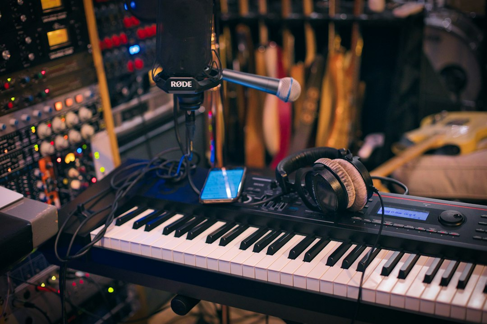

I 3 errori fatali nelle basi musicali e spot pubblicitari: come FF Edizioni trasforma la tua identità sonora

Come evitare i 3 errori più gravi nelle basi musicali e spot pubblicitari: il ruolo strategico di FF Edizioni per Aziende, Agenzie di Comunicazione, Emittenti Radio, Sposi e Regali
- Uso diffuso di basi musicali anonime royalty-free penalizza la riconoscibilità del brand.
- Spot pubblicitari poco memorabili generano scarso engagement e risultati commerciali inferiori.
- Mancanza di un’identità acustica unica mina la fidelizzazione e la differenziazione di mercato.
Analisi approfondita della notizia e delle implicazioni operative
Nel panorama attuale del marketing e della comunicazione, un elemento spesso sottovalutato ma cruciale per il successo delle campagne è la componente sonora. Aziende, agenzie di comunicazione, emittenti radiofoniche e persino il settore di eventi come matrimoni e regali, si affidano di frequente a basi musicali royalty-free o generiche, con conseguenze negative su impatto e riconoscibilità. La notizia che emerge da recenti studi e feedback di settore evidenzia come l’uso di brani anonimi porti a un appiattimento dell’identità sonora, riducendo drasticamente la capacità dei messaggi di catturare e trattenere l’attenzione del pubblico.
Inoltre, le produzioni audio standardizzate non solo compromettono la memorabilità degli spot pubblicitari, ma rischiano anche di trasmettere inconsapevolmente un’immagine aziendale anonima e priva di carattere. La carenza di autenticità sonora, fortemente richiesta da target sempre più esigenti e dal mercato competitivo, si traduce quindi in mancati guadagni potenziali e in una comunicazione meno efficace.
Dal punto di vista operativo, tali problematiche si moltiplicano creando un collo di bottiglia che rallenta il lavoro creativo e strategico, complicando inoltre il processo di differenziazione e fidelizzazione dei clienti finali o destinatari della comunicazione.
Le conseguenze e i costi di non agire
L’inerzia nel rivedere e migliorare l’approccio alla produzione musicale aziendale si traduce in costi nascosti, spesso non immediatamente quantificabili ma decisivi nel medio-lungo termine. Primo fra tutti è l’impiego di basi musicali anonime royalty-free, spesso gratuite o a basso costo, che dall’esterno possono sembrare un risparmio ma in realtà impoveriscono profondamente l’identità acustica di un brand o di un’emittente. Questa scelta scoraggia la fidelizzazione e riduce drasticamente la riconoscibilità nei mercati affollati.
Gli spot pubblicitari poco memorabili generati da questi stessi parametri standardizzati non riescono infine a stimolare conversioni efficaci o engagement duraturo con l’audience. Secondo case study di settore, campagne con alto impatto musicale personalizzato registrano tassi significativamente maggiori di recall e di lead acquisiti. Ignorare questo aspetto implica quindi accettare performance inferiori e minore ritorno sugli investimenti pubblicitari.
Infine, la mancanza di identità acustica porta a un allontanamento progressivo dagli utenti più sensibili e attenti all’esperienza di marca. La conseguenza è una perdita di quota di mercato e difficoltà crescenti nel costruire una narrativa coerente ed emozionale che solo una colonna sonora su misura può garantire.
Come FF Edizioni risolve il problema
FF Edizioni rappresenta una risposta tecnologica e creativa avanzata a tali criticità nel campo musicale per il business. Questa piattaforma, nata dall’expertise e dalla creatività del Maestro Fausto Fusetti, noto per collaborazioni storiche con grandi artisti come Califano e Bongusto, offre composizioni orchestrali inedite e certificate SIAE, rigenerando la produzione audio su scala professionale e personalizzata.
Le aziende, agenzie di comunicazione, emittenti radiofoniche e i settori di matrimoni e regali possono così accedere a una gamma di brani esclusivi costruiti su misura per ogni esigenza, superando il limite delle basi royalty-free anonime. Tale certificazione d’autore SIAE garantisce inoltre tutela legale e valorizzazione del contenuto creativo, elemento fondamentale per conferire prestigio e unicità ai propri messaggi.
FF Edizioni propone offerte competitive e trasparenti: una canzone inedita su misura a soli €300 oppure un jingle commerciale a €250, entrambi con una qualità orchestrale senza precedenti, pensati per incrementare la memorabilità degli spot pubblicitari e per costruire una solida identità acustica.
Questa soluzione si integra agevolmente con workflow esistenti, supportando creativi e imprenditori nel distinguersi in un mercato saturo, valorizzando il valore del brand con suoni unici, caldi e autentici, prodotti in studi di registrazione professionali di altissimo livello.
| Gestione Tradizionale | Con FF Edizioni |
|---|---|
| Basi musicali royalty-free anonime e non esclusive | Composizioni orchestrali originali con certificazione d'autore SIAE |
| Spot pubblicitari poco distintivi e difficili da ricordare | Jingle commerciali unici, studiati per catturare e fidelizzare |
| Nessuna identità acustica definita o riconoscibile | Sviluppo completo di un’identità sonora personalizzata e prestigiosa |
💡 Ti è stato utile questo approfondimento?
Condividilo con un collega o un amico del settore Aziende, Agenzie di Comunicazione, Emittenti Radio, Sposi e Regali a cui potrebbe interessare!
FAQ - Domande frequenti per professionisti del settore musicale B2B
1. Perché è importante avere basi musicali originali piuttosto che royalty-free?
Le basi originali creano un’identità sonora unica e tutelata, migliorano la memorabilità del brand e aumentano l’engagement, evitando sovrapposizioni con concorrenti.
2. Come FF Edizioni garantisce la qualità delle sue composizioni?
Le composizioni sono curate dal Maestro Fausto Fusetti, con lunga esperienza e riconoscimenti, e sono registrate in studi professionali con strumenti di alta qualità, inoltre sono certificate SIAE.
3. Qual è il processo per richiedere una canzone o un jingle personalizzato?
Contattando FF Edizioni, si definiscono le esigenze e i brief creativi; il team musicale sviluppa una proposta su misura con tempi rapidi e trasparenza nei costi.
Inizia Subito
Canzone Inedita su Misura a €300 o Jingle Commerciale a €250.
Fonti Ufficiali e Risorse Esterne
Scopri l'Intelligenza Artificiale per la tua attività
Ottimizza i processi e aumenta le vendite con le soluzioni B2B di RM Studio.
Scopri FF Edizioni